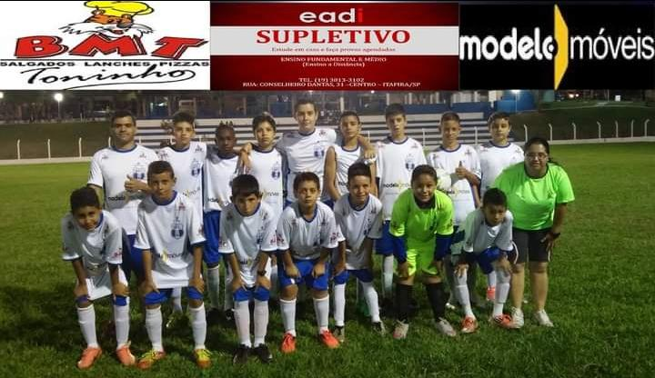
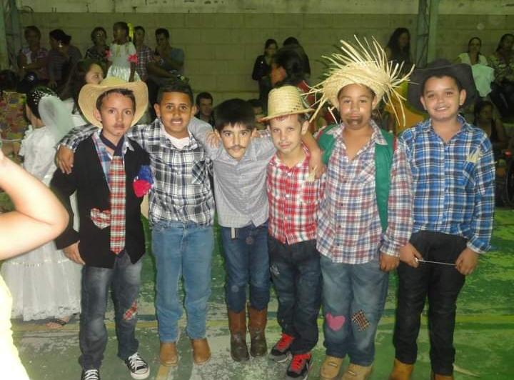
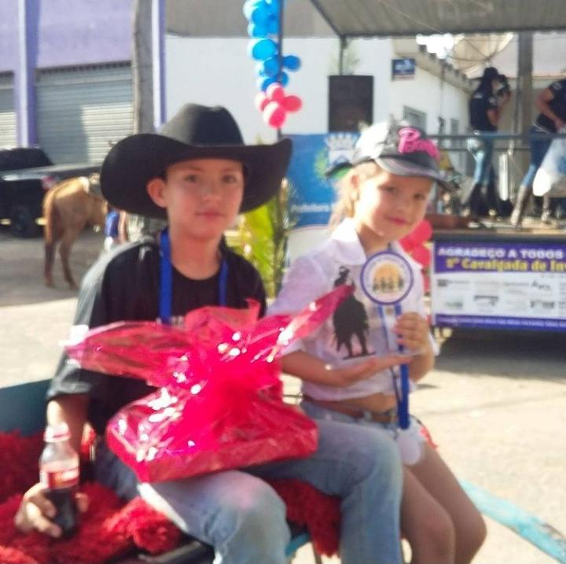

MINHAS EXPERIÊNCIAS DE VIDA:

- Meu time: Meu time (do meu bairro), eu e mais 4 amigos eramos sub 11 e estavamos jogando com o sub 14!
- Banda Lira: Em minha infância, após a escola eu almoçava na minha avó (Marlene) e ia para o NAI, era como se fosse uma escola entretanto mais divertida pois lá ás crianças brincavam, assistiam filme, faziam Educação F. e havia aulas músicais(Banda Lira), eu fazia parte e nessa imagem foi uma dás minhas apresentações que foi no disfile de comemoração do aniverssário de Itapira SP.

- Festa Junina: Eu e meus amigos de infância, na festa Junina da escola (EMEB MARIANA DO CARMO DE ALMEIDA CINTRA).
- Cachoeira: Uma de muitas cachoeiras que eu ja fui, escolhi essa imagem especifíca porque meu falecido tio participa dela.
- Aparecida do Norte: Sempre viagei des de pequeno para o Santuário Nacional de Nossa Senhora de Aparecida, gosto muito de viajar pra lá!
- Praia: Ir para a praia é de lei para mim, pois vou desde "quando eu nasci", hoje tenho 16 anos e chutando eu digo que já fui viajar para praia umas 13 vezes. 11 dessas vezes foi em Ubatuba, e 2 foi em Guaruja.

- Romaria: O dia que eu e minha irmã ganhamos um troféu e uma medalha cada um, da ("2 Cavalgada de inverno no Barão. "), (do meu bairro).
- Capitólio: Uma dás melhores viagens da minha vida, foi a viagem para Capitólio,foi muito divertido e o lugar é maravilhoso, muito lindo! Quando eu viagei, eu posei por uns 3 ou 4 dias em uma chácara e Foi demais! Recomendo!